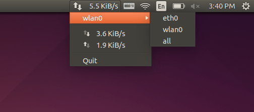

Топ 10 полезных апплетов и индикаторов для Ubuntu 14.04 LTS
Написал lexlukov в категории Linux, Программы для Linux, 21 Авг, 2014

Панельные индикаторы или апплеты могут быть очень полезными для быстрого доступа к функционалу программ. В этом посте я решил собрать топ самых полезных апплетов и индикаторов для Ubuntu 14.04 LTS.<!--more-->
1. Fed Indicator
Feed Indicator будет показывать новости с RSS.
Для установки этого индикатора в Ubuntu/Linux Mint вам нужно открыть терминал и выполнить следующие команды:
sudo add-apt-repository ppa:noobslab/indicators
sudo apt-get update
sudo apt-get install feedindicator
2. HackerTray
HackerTray - это простое приложение, которое показывает топ новостей с сайта Hacker News.
Для установки HackerTray вам нужно опять же открыть терминал и выполнить приведенные команды:
sudo apt-get install python-appindicator python-pip
sudo pip install hackertray
После завершения установки, вы можете запустить программу командой hackertray &.
3. Remindor Indicator
Remindor Indicator - индикатор, который был специально разработан для Ubuntu чтобы в нём можно было запланировать напоминания.
Для установки выполните следующие команды в терминале:
sudo add-apt-repository ppa:bhdouglass/indicator-remindor
sudo apt-get update
sudo apt-get install indicator-remindor
4. Keylock Indicator
Indicator keylock - может оказаться очень полезным если у клавиатуры вашего компьютера или ноутбука нет светодиодных индикаторов Numlock/CapsLock/ScrollLock.
С этой утилитой вы можете показывать уведомления когда включены или отключены клавиши CapsLock/NumLock/ScrollLock. Также в нём можно задать какие иконки будут показываться в зависимости от состояния этих клавиш.
Установку можно совершить подключив PPA:
sudo add-apt-repository ppa:tsbarnes/indicator-keylock
sudo apt-get update
sudo apt-get install indicator-keylock
5. Caffeine
Caffeine - позволит вам временно отключать скринсейвер, также в его настройках сделать так, чтобы при запуске определенных программ скринсейвер отключался вообще. Например, это может быть полезным если вам надоело, что ваш Linux каждый раз уходит в спящий режим при просмотре флеш-видео.
Установка:
sudo add-apt-repository ppa:caffeine-developers/caffeine-dev
sudo apt-get update
sudo apt-get install caffeine
6. Brightness Indicator
Brightness Indicator - позволяет контролировать яркость экрана вашего ноутбука.
Возможности:
Для установки вам нужно скопировать и вставить следующие команды в терминал:
sudo add-apt-repository ppa:indicator-brightness/ppa
sudo apt-get update
sudo apt-get install indicator-brightness
7. Calendar Indicator
Calendar Indicator - с помощью этого индикатора вы будете получать уведомления с Google Calendar на ваш Linux десктопе.
Установка:
sudo add-apt-repository ppa:atareao/atareao
sudo apt-get update
sudo apt-get install calendar-indicator
8. Classic Menu Indicator
Classic Menu Indicator - апплет для области уведомлении, разработанный для тех, кому по душе старый уютный GNOME 2.x.
Главное его назначение - показ меню в стиле старого GNOME.
Установка:
sudo add-apt-repository ppa:diesch/testing
sudo apt-get update
sudo apt-get install classicmenu-indicator
9. FluxGui Indicator
F.luxGui Indicator - апплет, который адаптирует насыщенность цветов вашего экрана в зависимости от времени дня. Если вы бережете свои глаза то советую обязательно попробовать установить этот апплет.
Установить FluxGui-indicator в Ubuntu или в Linux Mint можно выполнив следующие команды в терминале:
sudo add-apt-repository ppa:kilian/f.lux
sudo apt-get update
sudo apt-get install fluxgui
10. Touchpad Indicator
Touchpad Indicator - позволяет за пару кликов отключать или включать Touchpad на ноутбуке. А также можно задать в настройках чтобы он автоматически отключал тачпад после подключения мыши.
Установить Touchpad индикатор в Ubuntu можете этими командами:
sudo add-apt-repository ppa:atareao/atareao
sudo apt-get update
sudo apt-get install touchpad-indicator
В посте были использованы картинки и другие материалы с сайта Noobslab.com.